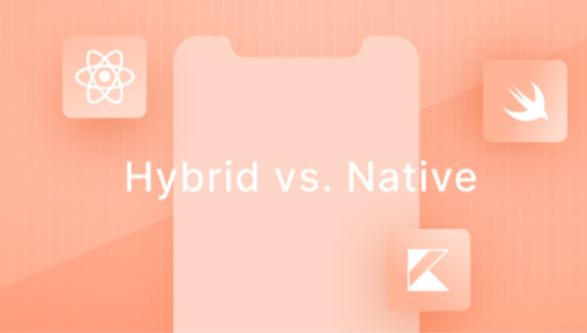

PRODUCT . July 24,2020
Interview - What it's like
to work remotly
in big-
sized product
development ?
People say that developing products isn't easy. neither it is to build long-distance relationships. But, how about doing both, simultaneously?
Nisha Teixeira
Lead Product Owner

DEVELOPMENT . July 2,2020
Hybrid vs. Native - Here is how you can choose one over the other ...
There is no deniying it, hybrid mobile development is booming and becoming the main option when considering development a mobile application due to the lower costs and faster development time.
DEVELOPMENT . July 2,2020
From monolithic to headless: how and why you should adapt your wordpress stack
Every dynamic website consists of two main parts: the backend and the frontend.The backend, which in marketing websites is commonly a content management System (CMS), allows websites owners...